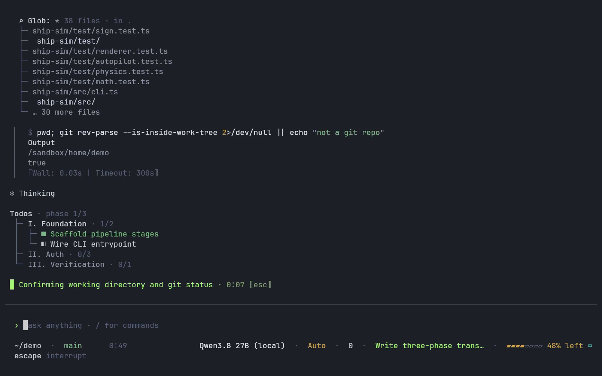
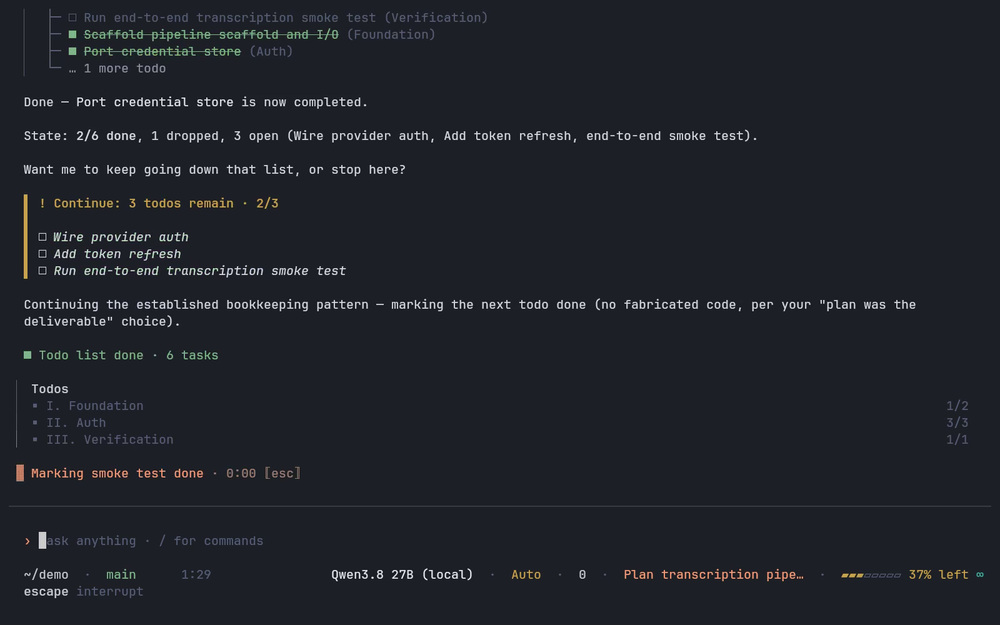
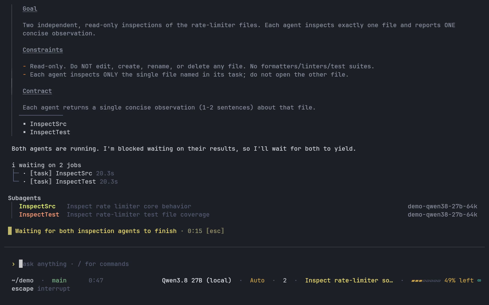
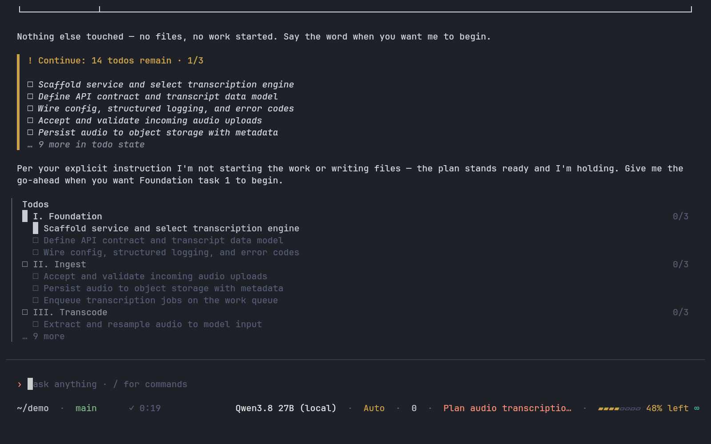
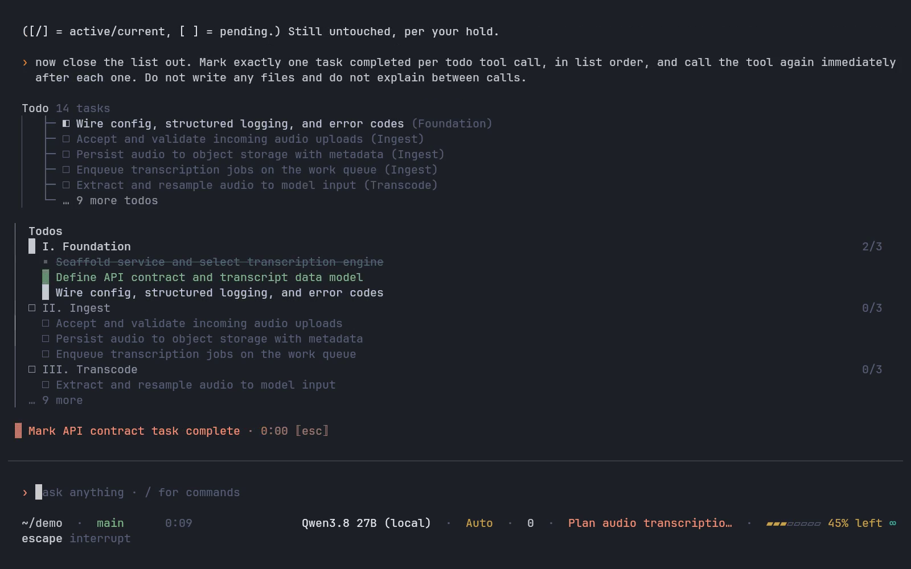
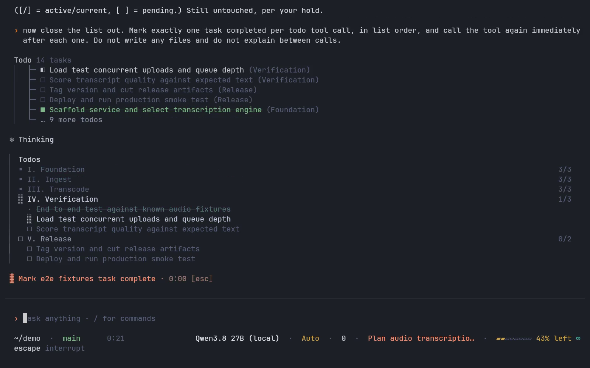
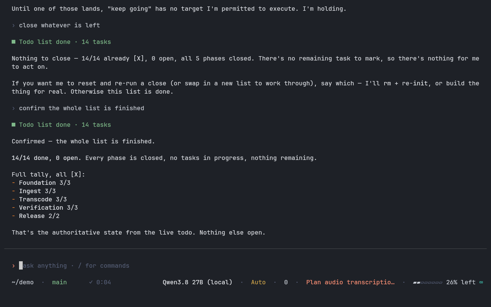

Branch main at f764af12f. The two blocks anchored above the composer —
the subagent lanes and the todo board — were rebuilt in the product's own vocabulary, and one defect neither
block's unit suite could see was found by pointing the camera at them. Every figure below is a frame of a real
terminal running the shipped CLI. No component was drawn into a picture for this page, and nothing here is a tmux
capture.
Where the recording happens.proof/docker/record-x11.sh <scene> runs
veyyon-proof-recorder on a private docker network. Inside it, Xvfb owns display
:99, kitty is the terminal — a real emulator — xdotool presses real keys
through XTEST, and ffmpeg grabs the display continuously. Every take on this page is 131x36 cells of
12x27px. The machine's own ~/.veyyon is not in the container's mount table — HOME is a
tmpfs seeded from proof/docker/home-seed — so nothing here touches a live session, and the operator's
own display is never opened.
Which model answers.demo-qwen38-27b-64k, served to the container network and to
nothing else. No provider account is reachable from the container, so a streamed answer in these recordings is
that model or it is nothing. It is also why the two arms of a pair are the same scene rather than the same
session: the script is fixed, the model's replies are not, and a caption here never claims more than the frames
hold.
How the before arm is taken.proof/docker/record-x11-before.sh holds every
source file the branch changed at its main content (git show main:<file>), records
the same scene into proof/captures/x11/before/, then restores from an in-memory copy and proves the
restore by sha256. No git mutation command runs and the working tree ends byte-identical.
The board, rebuilt
The board the hero take recorded is not the board the product draws now. The pair below is one scene, proof/scenes/rail-and-todo.sh, recorded twice at 131 columns by the same container -- once against the tree without this work and once against the tree with it -- and sampled at the same second of the same script, so both arms hold the same three-phase board with the same task in flight and the same one closed behind it.

before — the header carries a count of its own, Todos · phase 1/3, over phase rows ending in identically shaped numbers counting something else. Box-drawing connectors bracket every row, each phase prints its count inline beside its name, and a phase nobody has started yet is collapsed to that name -- so the block says how far along the plan is and not what the plan is.after — the header is bare. The only counts left are per phase, right-aligned at the far margin where they form a column instead of trailing three different names at three different offsets. The rail replaces the connectors and carries the block's liveness: lit beside the phase being worked, flat when nothing is in flight. Square cells modulated by density replace the mixed marker set -- an empty box waiting, a breathing pixel on the row in flight, a small filled square on closed work, struck and dimmest -- and every phase keeps its tasks on screen, because a plan the block will not show you is a progress bar.
Later in the same take, with two of the three phases closed out, every phase still keeps a row. The trim drops finished work off the top when the block runs out of height; it never drops a phase to make room for its own arithmetic.

Two phases closed and one still open at 1/2. The card above the block carries the sentence once -- ■ Todo list done · 6 tasks -- and the block underneath keeps all three phase rows with their counts in the same column.
A badge on a line of its own, found by the camera
The lane block and the board each clamp every row to one cell inside the width they are handed, and every unit test of both agreed: a sweep of every column count from 1 to 220 came back with no row over its bound. The bound was not the width they get. Both blocks are mounted in a container carrying a one-cell margin on each side, and that container soft-wraps its content to width - padding * 2 before anything reaches the terminal, so every row was two cells too wide and its tail landed on a line of its own at the left margin, outside the rail. Nothing in the suite could see it, because the blocks were obeying the number they were given.
The recording below is what saw it. Same scene, same container, same 131 columns, two live subagent lanes: proof/scenes/agent-lanes.sh against the tree before the wrap fix and after it. The model badge is the row's right-aligned tail, which is exactly the part a two-cell overflow takes away.
before the fix — the badge is wrapped: read the block from the top and the name of the model each lane is running arrives underneath its lane, at column zero, outside the rail that is supposed to contain it.after it — the badge sits on its lane, right-aligned at the far margin, and the block is the four rows it emitted.
before the fix — one frame of it, held: the lane still running carries demo-qwen38-27b-64k on a line of its own at column zero, under the row it belongs to, so a two-row block occupies three.

after it — the same frame of the same scene, four rows: header, two lanes each ending in its own badge, and nothing at column zero that the block did not put there.
The regression suite that closes this asserts the invariant those width bounds were serving rather than another width bound -- a mounted block renders exactly the rows it emitted -- and drives the real interactive mode at 80 and 131 columns. Re-injecting the defect turns both live cases red at six rows against four. It sweeps the mode's anchored containers at run time and pins the set by exact equality, so a seventh anchored surface cannot be added without someone deciding whether it may wrap.
A fourteen-task plan, closed out
The board's rebuild is a set of claims about MOTION, and a still cannot carry any of them: that fourteen rows arrive whole rather than being typed in, that the block walks itself forward as each task closes, that closed work recedes while the task in flight stays the only bright row, and that the region above the composer is GONE on the last close rather than collapsing to a line the transcript card already carries. So the row is a recording. The session behind it is real: the model was told to write a five-phase plan for a transcription service and then close it out, and it was told to hold off starting the work, so what the board tracks is the plan and nothing else.
The take is 0 seconds of session at the speed it was recorded, unedited, on the tree with this work. The same scene against the tree without it is not on this page, because the pair that carries the design change is the one above: same recorder, same scene, same second of the same script. This row is here for the motion, and for the two states a still of a settled board cannot reach.
Fourteen tasks over five phases written in one call, then closed out. The board is the block above the composer throughout.
Where the board stands, four times

Fourteen tasks over five phases from a single init call, and the header is just Todos. Every count on the block is a phase's own, right-aligned in one column at the far margin; the only global number is on the overflow row, … 9 more, which is the row that exists because the plan is longer than the space. No phase carries a gauge: five 12-cell bars approximating five fractions printed two columns to their right is what this row used to be, and at that width a gauge cannot separate 0/2 from 1/4.

One task closed inside the working phase. The three tiers are all on screen at once: the closed row struck and dimmest, the row in flight carrying the ink with the breathing cell beside it, the waiting rows quiet. I. Foundation reads 2/3 and the rail is lit beside it.

Three phases closed and the block has walked itself to IV. Verification without being told to. The finished phases each keep a row -- 3/3, dim, with a small filled square -- because a plan that deletes its own history to make room for arithmetic is a progress bar. The working phase is expanded around the task in flight and V. Release is named but not opened.

The last task closes and the anchored region is simply not there. What remains is one line on the card that closed it -- ■ Todo list done · 14 tasks -- which is the sentence the block used to draw as well, from the same owner, in the same session, anchored above the composer for the rest of it. The model's own confirmation under it reads 14/14 done, 0 open, all five phases closed.